شبنم رضاپور
کسی که PDFها را راضی کرد محتوایشان را بیکموکاست لو بدهند.
این جزوه با استفاده از جزوهساز پاپیروس و به صورت خودکار تولید شده است. ممکن است شامل خطا یا برداشت نادرست باشد و نیازمند بررسی و بازبینی مجدد است.
این درس به آنمی فقر آهن (IDA)، تظاهرات بالینی و بررسیهای آزمایشگاهی آن، جذب و انتقال آهن، ساخت و ذخیرهسازی آهن، بازیافت آهن از گلبولهای قرمز و تنظیم آن بهوسیلهٔ hepcidin میپردازد.
آنمی فقر آهن را معمولاً IDA مینامند؛ مخفف Iron Deficiency Anemia، یعنی آنمی فقر آهن یا آنمی کمبود آهن. منظور از آنمی (Anemia)، کم خونی میباشد.
آهن برای موارد زیر ضروری است:
در مولکول هموگلوبین چهار گروه heme وجود دارد و آهن در وضعیت دوظرفیتی (Fe²⁺) قرار دارد.
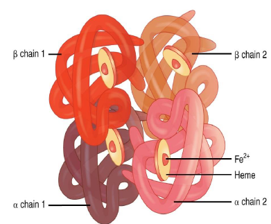
هر سیسی گلبول قرمز فشرده، که پس از سانتریفیوژ خون به دست میآید، حاوی حدود یک میلیگرم آهن است. 1cc HCT= 1mg Iron
برای برآورد حجم کل خون بدن، وزن را در ۷۵ ضرب میکنند. برای مثال، این محاسبه برای فردی با وزن ۶۰ کیلوگرم به کار میرود. خون تقریباً از حجمهای برابر پلاسما و گلبول قرمز تشکیل شده است. حجم کل خون حدود ۴۰۰۰ سیسی و حجم گلبولهای قرمز و پلاسما، هرکدام حدود ۲۰۰۰ سیسی، است. با توجه به اینکه هر سیسی گلبول قرمز فشرده یک میلیگرم آهن دارد، مقدار آهن همراه گلبولهای قرمز در کل خون حدود ۲۰۰۰ تا ۲۵۰۰ میلیگرم است. همچنین حدود 2000 میلیگرم آهن در مغز استخوان ذخیره میشود.
| مورد | مقدار یا رابطهٔ ذکرشده |
|---|---|
| آهن در هر سیسی گلبول قرمز فشرده | حدود ۱ میلیگرم |
| برآورد حجم کل خون | وزن × ۷۵ |
| حجم کل خون در مثال فرد ۶۰ کیلوگرمی | حدود ۴۰۰۰ سیسی |
| حجم گلبولهای قرمز و پلاسما در مثال | هرکدام حدود ۲۰۰۰ سیسی |
| آهن همراه گلبولهای قرمز | حدود ۲۰۰۰ تا ۲۵۰۰ میلیگرم |
| آهن ذخیرهشده در مغز استخوان | حدود 2000 میلیگرم |
آنمی (Anemia) یا کم خونی به سن، جنس و منطقهٔ جغرافیایی بستگی دارد. مثلا در ارتفاعات، بهدلیل کمتر بودن فشار اکسیژن، فرد پرخونتر میشود و اریتروپویتین (EPO) افزایش پیدا میکند.
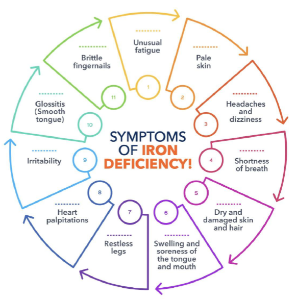
بعضی علائم در انواع مختلف آنمی مشترکاند؛ برای مثال، تپش قلب (palpitations). فرد کمخون ممکن است حتی با چند قدم راهرفتن دچار تپش قلب شود. زودرنجی نیز ممکن است دیده شود.
برخی علائم بیشتر با فقر آهن ارتباط دارند:
حرکتدادن مداوم پاها را سندرم پای بیقرار (restless legs syndrome) میگویند که از جمله عوارض مرتبط با کمبود آهن در بدن است.
یکی از مهمترین علائم فقر آهن کاهش تمرکز است. این موضوع بهویژه در کودکان میتواند خطرناک باشد. کودک دچار کمبود آهن ممکن است دقت و تمرکز کمتری داشته باشد، نتواند روی تکالیف مدرسه تمرکز کند و حواسپرت شود؛ با درمان آهن، وضعیت او بهتر میشود.
فرد مبتلا به فقر آهن ممکن است سرما را بهخوبی تحمل نکند و بدنش نتواند با سرما وفق پیدا کند.
در فقر آهن شدید، ممکن است تمایل به خوردن مواد غیرخوراکی مانند نشاسته، یخ یا گل ایجاد شود. اشتهای غیرعادی و کاذب به خوردن مواد غیرخوراکی را پیکا (pica) و تمایل به خوردن یخ را pagophagia مینامند. بعضی افراد به موادی تمایل دارند که هنگام جویدن، زیر دندان صدای crunchy ایجاد میکنند.
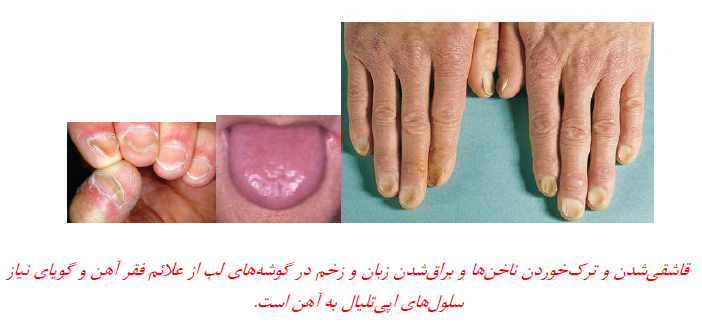
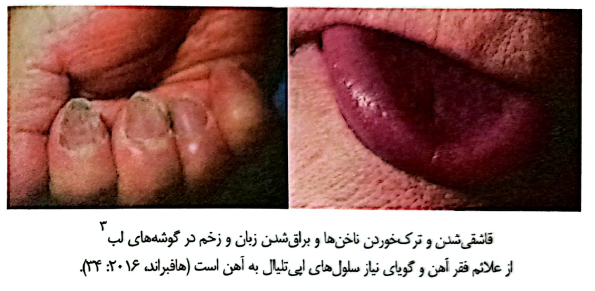
علائم آنمی فقر آهن متغیر است و به شدت آن بستگی دارد. ناخنها ممکن است ترکهای طولی بردارند، نازک و شکننده شوند و گاهی گود و قاشقیشکل شوند. این حالت کویلونیشیا یا کویلونیکیا (koilonychia) نام دارد و از نشانههای مراحل پیشرفتهٔ فقر آهن است.
در بعضی موارد، بیمار بلع دردناک یا دشواری در بلع دارد و سوزش زبان نیز دیده میشود. همراهی آنمی فقر آهن با سوزش زبان و اختلال بلع را سندرم پلامر–وینسون (Plummer–Vinson syndrome) میگویند؛ گاهی هم به آن سندرم کلی پترسون Kelly–Paterson syndrome گفته میشود.
در فقر آهن ممکن است زبان براق شود و پرزهای آن از بین بروند. زخم گوشهٔ لب، ریزش مو و کاهش تمرکز نیز ممکن است وجود داشته باشد.
| گروه علائم | موارد ذکرشده |
|---|---|
| علائم مشترک در انواع آنمی | تپش قلب (palpitations)، زودرنجی |
| علائم بیشتر مرتبط با فقر آهن | زخم گوشهٔ لب، شکنندگی ناخن، خستگی، رنگپریدگی، سردرد، خشکی و ریزش مو، پرش و بیقراری پاها |
| تمرکز و تحمل سرما | کاهش تمرکز، بهویژه در کودکان؛ تحملنکردن سرما |
| پیکا و pagophagia | تمایل به خوردن مواد غیرخوراکی؛ تمایل به خوردن یخ |
| تغییرات ناخن و زبان | ترک طولی، نازک و شکنندهشدن یا گودشدن ناخن؛ براقشدن زبان و ازبینرفتن پرزها |
| بلع و دهان | بلع دردناک یا دشوار، سوزش زبان، زخم گوشهٔ لب |
از غذاهای دارای آهن میتوان گوشت قرمز، سبزیهای برگسبز تیره و عدس را نام برد. دربارهٔ اسفناج گفته شد که آهن زیادی ندارد.
برای جذب آهن باید به موادی که همراه غذا مصرف میشوند نیز توجه کرد؛ چای و موادی مانند فیتات ، فسفات و تانیت میتوانند با جذب آهن تداخل داشته باشند و باعث عدم جذب آهن شوند.
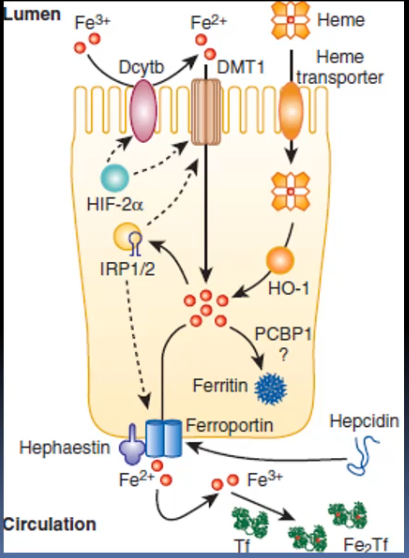
آهن غذا وارد معده و سپس ابتدای روده، یعنی دوازدهه (duodenum)، میشود. در سطح سلولهای گوارشی دوازدهه، کانالی به نام DMT1 وجود دارد. DMT1 مخفف divalent metal transporter یعنی کانال عبور فلزات دوظرفیتی است. آهن، منیزیم و روی از فلزاتی هستند که در این زمینه نام برده شدند؛ بنابراین ممکن است فلزات دوظرفیتی برای عبور از این مسیر با هم رقابت کنند.
آهن موجود در غذا به شکل Fe³⁺ است در صورتی که آهن باید به شکل دوظرفیتی جذب شود. در سطح سلولهای گوارشی، آنزیم Dcytb (duodenal cytochrome b) آهن Fe³⁺ را به Fe²⁺ احیا میکند. Fe²⁺ از DMT1 عبور میکند و وارد سلول گوارشی میشود.
سلول گوارشی بر اساس نیاز بدن دربارهٔ سرنوشت آهن تصمیم میگیرد:
پس از خروج از سلول توسط فروپورتین، آهن به پروتئینی به نام ترانسفرین transferrin متصل میشود. Transferrin در کبد ساخته میشود و میتواند دو اتم آهن سهظرفیتی (دی فریک) حمل کند. آهن جذبشده سلول از طریق DMT1 دوظرفیتی است؛ بنابراین پروتئینی به نام هفاستین hephaestin در کنار ferroportin، باید Fe²⁺ را به Fe³⁺ تبدیل میکند تا آهن بتواند به transferrin متصل شود و به نقاط مختلف بدن برود. اگر آهن بدن کم باشد، مصرف آهن همراه با فلزات دوظرفیتی دیگر ممکن است باعث رقابت برای عبور از کانال شود.
| مرحله | مولکول یا مسیر | شرح |
|---|---|---|
| ورود آهن غذایی به سلول گوارشی | Dcytb | آهن غذایی Fe³⁺ را به Fe²⁺ احیا میکند. |
| عبور از سطح سلول گوارشی | DMT1 | Fe²⁺ را وارد سلول گوارشی میکند؛ آهن، منیزیم و روی ممکن است برای این مسیر رقابت کنند. |
| ذخیرهسازی در سلول گوارشی | ferritin | در صورت کافیبودن آهن بدن، آهن به شکل ferritin ذخیره میشود. |
| خروج از سلول گوارشی | ferroportin | در صورت نیاز بدن، آهن از سمت دیگر سلول خارج میشود. |
| اکسیدشدن آهن برای اتصال به transferrin | hephaestin | در کنار ferroportin، Fe²⁺ را به Fe³⁺ تبدیل میکند. |
| انتقال در خون | transferrin | آهن Fe³⁺ را به نقاط مختلف بدن میبرد؛ در کبد ساخته میشود و میتواند دو اتم آهن حمل کند. |
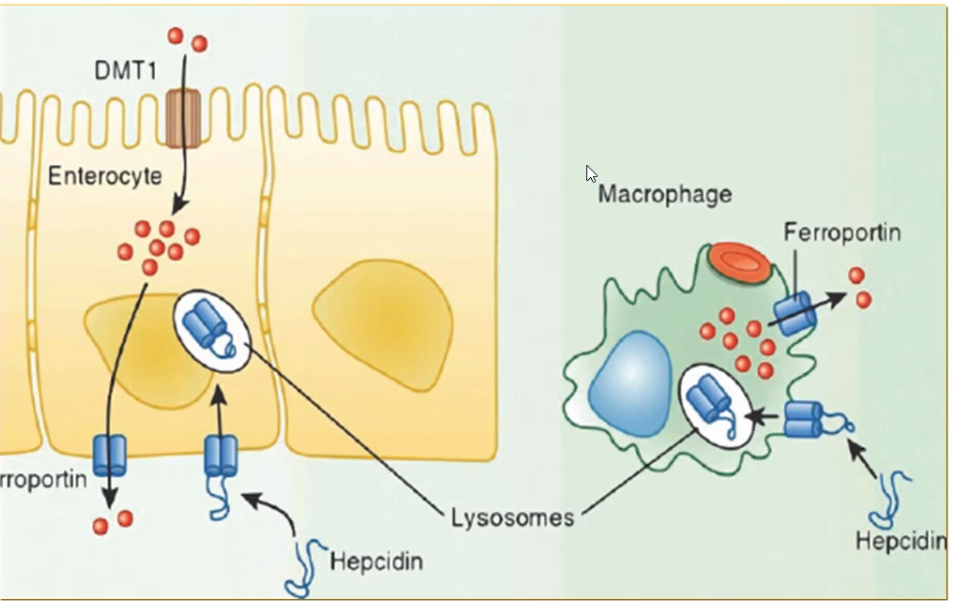
هپسیدین hepcidin پروتیینی است که حدود 19 آمینو اسید دارد و ساخت کبد بوده که میتواند با اتصال به کانال فروپورتین آن را به درون سلول برده و تجزیه لیزوزومی کند؛ پس عملکرد آن مخالف کانال های فروپورتین میباشد و مهار کننده خروج آهن از سلول است.
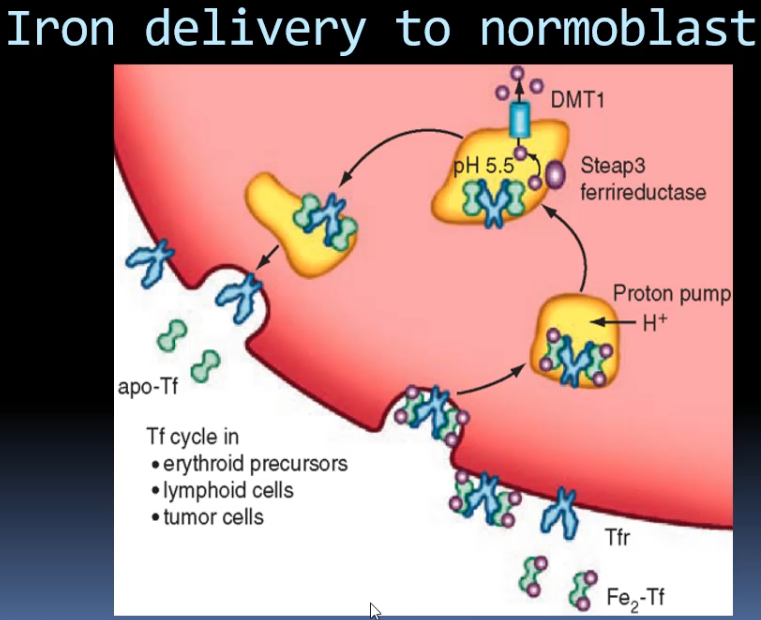
Transferrin به گیرندهٔ transferrin، یعنی CD71 متصل میشود. گیرندهٔ transferrin روی سلولهای مختلف بدن، از جمله سلولهای مغز استخوان وجود دارد. هر گیرنده میتواند به دو مولکول transferrin متصل شود و هر مولکول transferrin دو اتم آهن حمل میکند.
در شرح این فرایند گفته شد transferrin به گیرنده متصل میشود و وارد سلول میشود؛ سپس با کمک پمپ هیدروژن، آهن از کمپلکس جدا، از سه ظرفیتی به دو ظرفیتی احیا میشود و وارد سیتوپلاسم میشود. transferrin خالی دوباره به سطح سلول برمیگردد. به این فرایند بازگردش transferrin میگویند. توجه کنید که transferrin وارد سلول نمیشود و در خون میماند تا آهنی را که از طریق ferroportin از سلول گوارشی یا ماکروفاژ خارج میشود، دریافت کند.
گیرندهٔ transferrin به ترانسفرینی که دو اتم آهن دارد، یعنی diferric است، تمایل بیشتری دارد. اگر transferrin فقط یک اتم آهن داشته باشد، یعنی monoferric باشد، گیرنده ممکن است به آن متصل شود؛ اما transferrin بدون آهن را نمیپذیرد.
| مورد | شرح |
|---|---|
| گیرندهٔ transferrin | CD71؛ روی سلولهای مختلف، از جمله سلولهای مغز استخوان، وجود دارد. |
| اتصال گیرنده | هر گیرنده میتواند به دو مولکول transferrin متصل شود. |
| ظرفیت هر transferrin | هر مولکول transferrin دو اتم آهن حمل میکند. |
| تمایل گیرنده | تمایل بیشتر به diferric transferrin؛ امکان اتصال به transferrin دارای یک اتم آهن؛ نپذیرفتن transferrin بدون آهن |
| وضعیت گلبول قرمز بالغ | هسته ندارد. |
| شرح فرایند | یک بخش از گفتار ورود transferrin به سلول و بازگشت transferrin خالی را بیان میکند؛ بخش دیگر میگوید transferrin وارد سلول نمیشود و در خون میماند. |
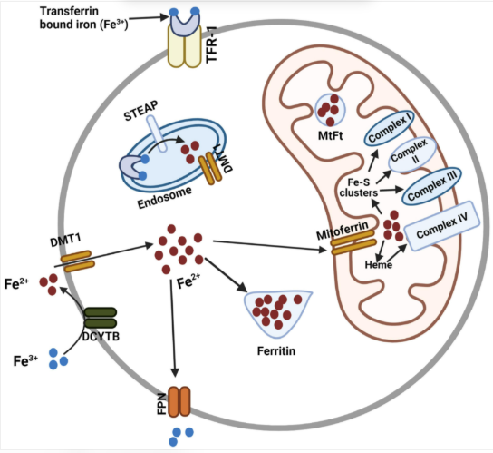
آهن آزادشده در سلول میتواند به میتوکندری برود. پروتئینی به نام میتوفرین mitoferrin آهن را از سیتوپلاسم به میتوکندری منتقل میکند. آهن در میتوکندری در چرخهٔ سنتز heme به کار میرود. محصول میتوکندری، یعنی heme، با globin که در ریبوزوم ساخته میشود ترکیب میشود و هموگلوبین را تشکیل میدهد.
| جزء یا پروتئین | نقش ذکرشده |
|---|---|
| mitoferrin | انتقال آهن از سیتوپلاسم به میتوکندری |
| میتوکندری | بهکارگیری آهن در چرخهٔ سنتز heme |
| globin | ساختهشدن در ریبوزوم و ترکیبشدن با heme |
| heme + globin | تشکیل هموگلوبین |
پروتئینهای تنظیمکنندهٔ آهن(iron regulatory proteins; IRP) یعنی IRP1 و IRP2 نیاز بدن به آهن بیشتر یا کمتر را حس میکنند. اگر آهن زیاد باشد، سیستم ذخیرهسازی فعال میشود؛ اگر آهن کم باشد، نحوهٔ تنظیم و استفاده از آهن تغییر میکند.
تنظیم مقدار آهن اهمیت دارد، چون آهن زیاد میتواند به سلول آسیب بزند. در برخی روشهای درمان سرطان، آهن درون سلول سرطانی را زیاد میکنند تا رادیکالهای آهن ایجاد شوند و مرگ سلولی رخ دهد. بنابراین، با اینکه بدن به آهن نیاز دارد، مقدار آن باید بهشدت کنترل شود.
جذب بیش از حد آهن میتواند باعث تجمع آن در کبد و در نهایت سرطان کبد شود. تجمع آهن در قلب نیز میتواند ریتم قلب را مختل کند به همین خاطر کبد پروتئینهای متعددی را برای تنظیم ترشح hepcidin به کار میگیرد.
| عامل یا وضعیت | رابطهٔ ذکرشده با تنظیم یا تجمع آهن |
|---|---|
| IRP1 و IRP2 | نیاز بدن به آهن بیشتر یا کمتر را حس میکنند. |
| آهن زیاد | سیستم ذخیرهسازی فعال میشود؛ آهن زیاد میتواند به سلول آسیب بزند. |
| آهن کم | نحوهٔ تنظیم و استفاده از آهن تغییر میکند. |
| جذب بیش از حد آهن | میتواند به تجمع آهن در کبد و در نهایت سرطان کبد منجر شود. |
| تجمع آهن در قلب | میتواند ریتم قلب را مختل کند. |
| کبد | از پروتئینهای متعددی برای تنظیم ترشح hepcidin استفاده میکند. |
آهن ذخیرهای بدن به دو شکل فریتین ferritin و هموسیدرین hemosiderin وجود دارد.
Ferritin در سلولهای بدن دیده میشود و از ۲۴ زیرواحد پروتئینی سبک و سنگین تشکیل شده است؛ H به heavy سنگین و L به light سبک اشاره دارد. این زیرواحدها در کنار هم ساختاری شبیه کره یا پوسته میسازند که میتواند تا حدود ۴۰۰۰ اتم آهن را در خود جای دهد.
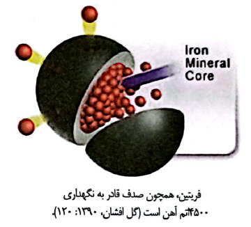
وقتی بدن به آهن نیاز دارد، آهن ذخیرهشده در ferritin باید آزاد شود و از حالت ذخیره خارج شود. پروتئینی به نام NCOA4 به ferritin متصل میشود و آن را به دستگاه لیزوزومی میبرد. در لیزوزوم، پروتئین ferritin تجزیه میشود و آهن آزاد میشود. این فرایند در سلولها و ماکروفاژها رخ میدهد. واردکردن ferritin به مسیر لیزوزومی بهوسیلهٔ NCOA4 و آزادشدن آهن، ferritinophagy فریتینوفاژی نام دارد.
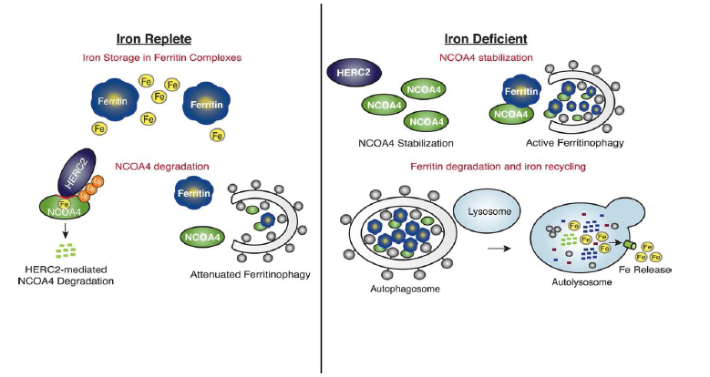
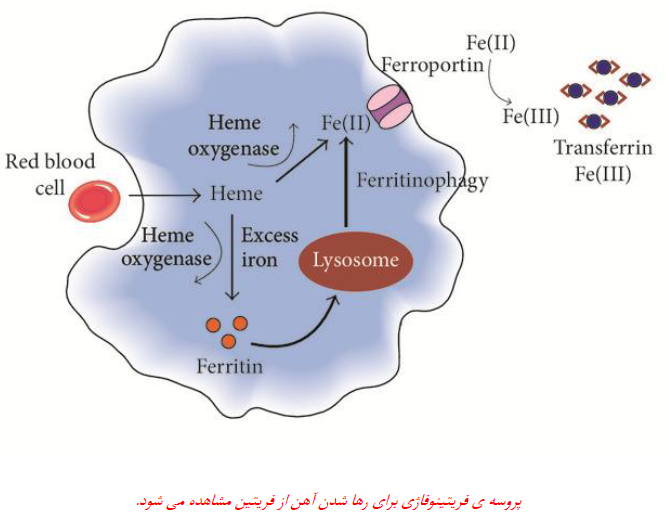
پروتئین HERC2 میتواند NCOA4 را تجزیه کند و مانع میشود NCOA4 بهطور مداوم ferritin را وارد مسیر تجزیه کند و آهن بیش از حد آزاد شود. تعادل میان NCOA4 و HERC2 در تنظیم آزادشدن آهن اهمیت دارد. آهن آزادشده از ماکروفاژ میتواند از ferroportin خارج شود و به transferrin متصل شود.
| عامل | نقش یا ویژگی ذکرشده |
|---|---|
| ferritin | یکی از دو شکل آهن ذخیرهای؛ از ۲۴ زیرواحد سبک و سنگین ساخته شده و میتواند تا حدود ۴۰۰۰ اتم آهن را در خود جای دهد. |
| hemosiderin | شکل دیگر آهن ذخیرهای بدن. |
| NCOA4 | ferritin را به دستگاه لیزوزومی میبرد؛ در آنجا ferritin تجزیه و آهن آزاد میشود. |
| HERC2 | NCOA4 را تجزیه میکند و از ورود مداوم ferritin به مسیر تجزیه و آزادشدن بیش از حد آهن جلوگیری میکند. |
| ferritinophagy | واردکردن ferritin به مسیر لیزوزومی بهوسیلهٔ NCOA4 و آزادشدن آهن. |
| ferroportin | آهن آزادشده از ماکروفاژ میتواند از آن خارج شود و به transferrin متصل شود. |
گلبول قرمز پیر وارد ماکروفاژ میشود و در آنجا از بین میرود. آهن گلبول قرمز پیر آزاد میشود و از طریق ferroportin از ماکروفاژ خارج میشود. ماکروفاژهای بدن آهن را ذخیره میکنند و ferroportin دارند؛ سلولهای روده هم ferroportin دارند.
در مغز استخوان، جزایر اریتروبلاستیک (erythroblastic islands) وجود دارد. اطراف هر ماکروفاژ در مغز استخوان، سلولهای در حال ساخت گلبول قرمز قرار میگیرند. گلبول قرمز هستهدار، بهویژه در مرحلهای که میخواهد هسته را بیرون بیندازد، هستهاش را دفع میکند و ماکروفاژ آن را میخورد. ماکروفاژ در همان محل ferroportin دارد و میتواند آهن را در اختیار گلبول قرمز هستهدار قرار دهد؛ بنابراین آهن میتواند از راههای مختلف به گلبول قرمز هستهدار برسد.
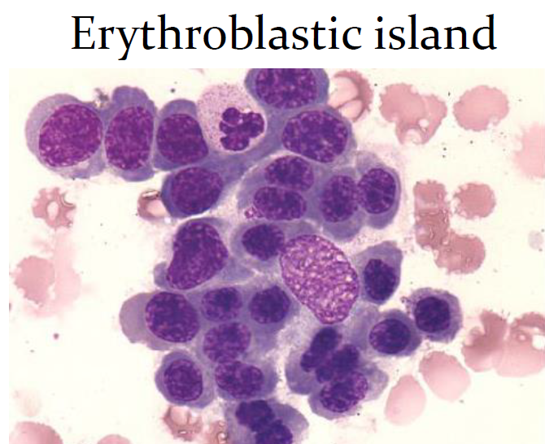
| محل یا فرایند | رابطهٔ آهن با سلولها و ferroportin |
|---|---|
| ماکروفاژ و گلبول قرمز پیر | گلبول قرمز پیر وارد ماکروفاژ میشود و از بین میرود؛ آهن آن آزاد میشود و از طریق ferroportin از ماکروفاژ خارج میشود. |
| سلولهای روده | ferroportin دارند و آهن میتواند از سلول از طریق آن خارج شود. |
| جزایر اریتروبلاستیک مغز استخوان | سلولهای در حال ساخت گلبول قرمز در اطراف ماکروفاژ قرار میگیرند. |
| دفع هسته | گلبول قرمز هستهدار هستهاش را دفع میکند و ماکروفاژ آن را میخورد. |
| تأمین آهن در مغز استخوان | ماکروفاژ در همان محل ferroportin دارد و میتواند آهن را در اختیار گلبول قرمز هستهدار قرار دهد. |
در بیماریها و عفونتها، کبد hepcidin ترشح میکند. افزایش آهن میتواند رشد میکروبها را بیشتر کند؛ بنابراین hepcidin با بستن ferroportin، هم خروج آهن از سلول روده و هم خروج آهن از ماکروفاژ را کاهش میدهد.
Hepcidin شاهکلید تنظیم آهن در بدن است و با باز یا بستهکردن مسیرهای انتقال آهن، مقدار آهن را تنظیم میکند:
Hepcidin در کبد ساخته و ترشح میشود. hepcidin پروتئینی با حدود ۱۹ اسیدآمینه است.
| وضعیت یا مسیر | اثر بر ferroportin و انتقال آهن |
|---|---|
| بیماریها و عفونتها | کبد hepcidin ترشح میکند. |
| افزایش hepcidin | با بستن ferroportin، خروج آهن از سلول روده و ماکروفاژ کاهش مییابد. |
| جذب آهن از دستگاه گوارش | برای جذب آهن، ferroportin باید باز باشد. |
| انتقال آهن بازیافتی از ماکروفاژ به نسل جدید گلبولهای قرمز | ferroportin ماکروفاژ باید باز باشد. |
| بستهبودن همیشگی کانالها | آهن به بدن نمیرسد و آنمی شدید ایجاد میشود. |
| بازبودن همیشگی کانالها | آهن بیش از حد خطرناک است. |
در سطح سلول کبد، مجموعهای از پروتئینها به سلول برای ترشح hepcidin سیگنال میدهند. ژن hepcidin روی کروموزوم ۱۹ قرار دارد و HAMP نامیده میشود. پروتئینهای نامبردهشده در این مجموعه عبارتاند از:
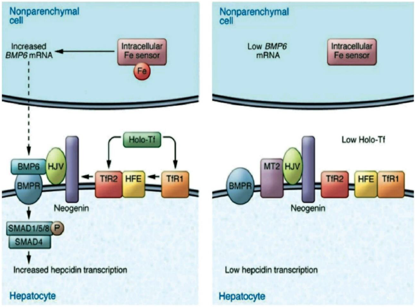
این پروتئینها در کنار هم سنتز hepcidin در کبد را کنترل میکنند. Hemojuvelin سنتز hepcidin را تحریک میکند و matriptase-2 آن را میشکند تا تعادل برقرار شود. اگر در این سیستم جهش رخ دهد، تنظیم hepcidin مختل میشود و ممکن است آهن در بدن بیش از حد تجمع پیدا کند.
اگر hemojuvelin درست کار نکند مثل جهش های HJV در بدن، hepcidin ممکن است به مقدار زیاد ترشح شود و آهن در بدن تجمع کند؛ این وضعیت با hemojuvelin و hemochromatosis جوانی شناخته میشود.
| پروتئین یا ژن | نقش یا ارتباط ذکرشده |
|---|---|
| HAMP | نام ژن hepcidin که روی کروموزوم ۱۹ قرار دارد. |
| BMP و گیرندهٔ BMP | از پروتئینهای مجموعهٔ کنترلکنندهٔ سنتز hepcidin در کبد. |
| HJV (hemojuvelin) | از پروتئینهای مجموعه؛ hemojuvelin سنتز hepcidin را تحریک میکند. |
| TFR1 | گیرندهٔ transferrin 1؛ از پروتئینهای مجموعه. |
| TFR2 | گیرندهٔ transferrin 2؛ از پروتئینهای مجموعه. |
| HFE | پروتئین hemochromatosis؛ از پروتئینهای مجموعه. |
| matriptase-2 | از پروتئینهای مجموعه؛ hepcidin را میشکند. |
| جهش در این سیستم | تنظیم hepcidin مختل میشود و ممکن است آهن بیش از حد در بدن تجمع پیدا کند. |
جهش در HFE، یعنی پروتئین hemochromatosis، شایعترین علت مطرحشده برای iron overload است.
هنگام شک به کمبود آهن، هم مورفولوژی گلبولهای قرمز کمککننده است و هم چند آزمایش، از جمله serum iron، TIBC یا SFe و ferritin.
| بررسی | چه چیزی را نشان میدهد یا چگونه انجام میشود | نکتهٔ مرتبط با فقر آهن |
|---|---|---|
| مورفولوژی گلبولهای قرمز | در بررسی کمبود آهن کمککننده است. | در کنار آزمایشها بررسی میشود. |
| serum iron (SFe) | مقدار آهن متصل به transferrin را اندازهگیری میکند. | در فقر آهن کاهش مییابد. |
| TIBC | ظرفیت کل اتصال به آهن؛ با افزودن آهن برای پرکردن جایگاههای خالی transferrin اندازهگیری میشود. | در فقر آهن افزایش مییابد. |
| transferrin saturation | درصد اشباع TIBC؛ از ضرب serum iron در ۱۰۰ و تقسیم حاصل بر TIBC به دست میآید. | کمتر از ۱۵٪ به نفع فقر آهن است. |
| ferritin | نشاندهندهٔ ذخیرهٔ آهن بدن است. | کمتر از ۱۲ نشاندهندهٔ تهیشدن ذخایر آهن است. |
| Ret-He | مقدار هموگلوبین رتیکولوسیت را نشان میدهد. | کمتر از ۲۷ پیکوگرم نشان میدهد آهن کافی برای ساخت هموگلوبین در دسترس نبوده است. |
| sTfR/log ferritin index | از تقسیم sTfR بر لگاریتم ferritin به دست میآید. | بیشتر از ۲ به نفع فقر آهن و کمتر از ۲ به نفع آنمی بیماریهای مزمن است. |
Serum iron (SFe) مقدار آهن متصل به transferrin را در آزمایشگاه اندازهگیری میکند. بخشی از transferrinها دو اتم آهن دارند، بخشی یک اتم آهن دارند و بخشی نیز آهن ندارند.
محدودهٔ طبیعی serum iron حدود ۵۰ تا ۱۶۰ میکروگرم در دسیلیتر است. اگر SFe مثلاً ۲۰ یا ۳۰ باشد، آهن خون پایین است.
Serum iron تغییرات روزانه (diurnal variation) دارد. برای مثال، ممکن است مقدار آن صبح ۱۰۰ باشد و عصر به ۶۰ یا ۷۰ برسد که کاهش عصرگاهی فیزیولوژیک است. بنابراین، برای اندازهگیری استاندارد serum iron باید آزمایش را صبح و ناشتا انجام داد.
برای اندازهگیری TIBC، در آزمایشگاه به نمونه آهن اضافه میکنند تا جایگاههای خالی transferrin پر شوند و سپس مقدار آهن متصلشده را اندازه میگیرند. TIBC مخفف total iron-binding capacity، یعنی ظرفیت کل ترانسفرین (اتصال به آهن) است.
در آنمی فقر آهن TIBC افزایش مییابد، چون مقدار transferrin بیشتر و جایگاههای خالی آن زیاد است. در فقر آهن، کبد transferrin بیشتری میسازد، اما بهعلت کمبود آهن این transferrin خالی میماند. با افزودن آهن در آزمایشگاه، جایگاههای زیادی برای اتصال وجود دارد و ظرفیت اندازهگیریشده بالا میرود.
محدودهٔ TIBC حدود ۲۵۰ تا ۴۰۰ میکروگرم در دسیلیتر است.
برای مثال:
در آنمی فقر آهن، کاهش SI و افزایش TIBC دیده میشود.
آزمایشگاه پارامتر دیگری به نام اشباع ترانسفرین (transferrin saturation) گزارش میکند. این مقدار از ضرب serum iron در ۱۰۰ و تقسیم حاصل بر TIBC به دست میآید و درصد اشباع TIBC را نشان میدهد. محدودهٔ طبیعی آن حدود ۲۰ تا ۴۵ درصد است.
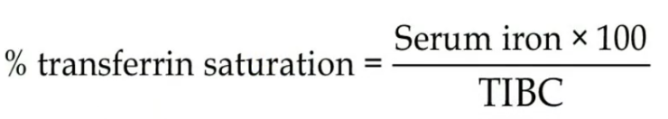
برای نمونه، اگر serum iron برابر ۳۰ و TIBC برابر ۳۰۰ باشد، اشباع transferrin برابر ۱۰ درصد است و باقی ظرفیت خالی میماند. اشباع transferrin کمتر از ۱۵ درصد به نفع فقر آهن است.
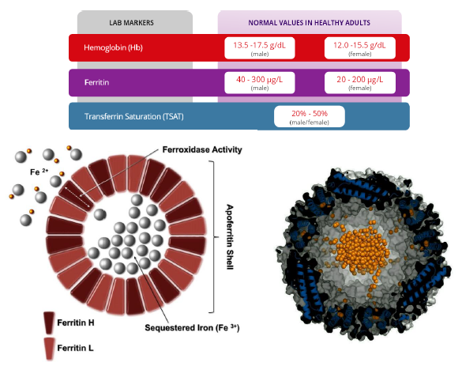
Ferritin را میتوان در آزمایشگاه اندازهگیری کرد و این شاخص نشاندهندهٔ ذخیرهٔ آهن بدن است. بنابراین، آزمایش آن را میتوان در هر ساعتی از روز انجام داد و برخلاف serum iron، لازم نیست آزمایش صبح باشد.
واحد معمول ferritin میکروگرم در لیتر است. هر میکروگرم در لیتر برابر با یک پیکوگرم در سیسی است؛ ممکن است بعضی آزمایشگاهها پیکوگرم را گزارش کنند، اما واحد رایج میکروگرم در لیتر است. محدودهٔ طبیعی ferritin حدود ۲۰ تا ۲۰۰ میکروگرم در لیتر است. هر میکروگرم ferritin معادل حدود ۸ تا ۱۰ میلیگرم آهن ذخیرهشده در بدن در نظر گرفته میشود. اگر ferritin کمتر از ۱۲ باشد، ذخایر بدن از آهن تهی شدهاند.
برای مثال، اگر ferritin برابر ۵۰ باشد، با درنظرگرفتن ۸ تا ۱۰ میلیگرم آهن بهازای هر میکروگرم ferritin، حدود ۴۰۰ تا ۵۰۰ میلیگرم آهن ذخیرهشده داریم. مقدار ferritin حدود ۵۰ برای خانمها و حدود ۱۰۰ برای آقایان بهعنوان مقادیر مناسب درنظر گرفته میشود. دربارهٔ زمان قطع آهن در درمان فقر آهن، وقتی ferritin به حدود ۵۰ برسد پرسش مطرح میشود؛ معمولاً وقتی ferritin به ۵۰ رسید، ذخیرهٔ آهن مناسب شده است.
ذخایر آهن را میتوان در مغز استخوان هم بررسی کرد. نمونهٔ مغز استخوان را رنگآمیزی میکنند؛ رنگآمیزی Perls یا آبی پروس Prussian blue آهن را رنگ میزند و آهن ذخیرهشده را میتوان دید. بررسی آهن مغز استخوان تست طلایی است، اما به نمونهگیری از مغز استخوان نیاز دارد و به همین دلیل معمولاً بهسادگی انجام نمیشود. پس از بررسی مغز استخوان، ferritin خون راه سادهتری برای ارزیابی ذخایر آهن است؛ چون نیاز به نمونه مغز استخوان نیست.
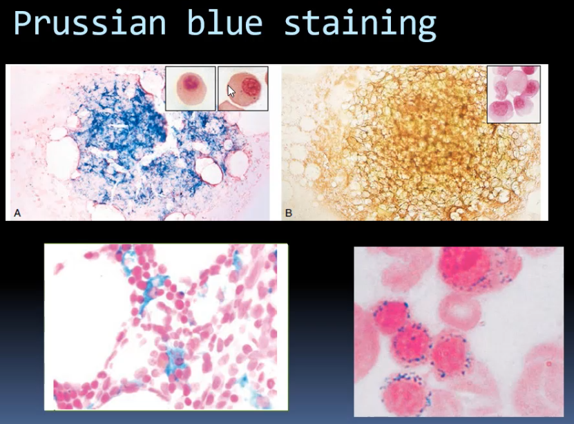
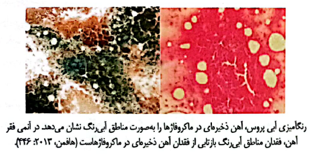
| روش ارزیابی ذخایر آهن | روش یا ویژگی ذکرشده |
|---|---|
| Ferritin خون | نشاندهندهٔ ذخیرهٔ آهن است؛ در هر ساعتی از روز قابل اندازهگیری است. |
| بررسی آهن مغز استخوان | نمونه رنگآمیزی میشود؛ Perls یا Prussian blue آهن را رنگ میزند. تست طلایی است، اما به نمونهگیری از مغز استخوان نیاز دارد و معمولاً بهسادگی انجام نمیشود. |
یکی از آزمایشهای اولیهای که میتواند در مراحل ابتدایی آنمی فقر آهن کمککننده باشد، سنجش Ret-He است؛ یعنی هموگلوبین رتیکولوسیت (reticulocyte hemoglobin equivalent). برای اطلاعات بیشتر به جلسه 5 مراجعه کنید.
Ret-He نشان میدهد گلبول قرمز جوانی که بهتازگی وارد خون شده است، چقدر هموگلوبین دارد. مقدار طبیعی آن حدود ۲۷ پیکوگرم به بالا است. اگر هموگلوبین رتیکولوسیت کمتر از ۲۷ پیکوگرم باشد، نشان میدهد آهن کافی برای ساخت هموگلوبین در دسترس نبوده است.
تفاوت Ret-He با MCH این است که MCH مربوط به گلبول قرمز بالغ است، اما Ret-He مقدار هموگلوبین رتیکولوسیت را نشان میدهد(یادآوری جلسه5)
| شاخص | سلولی که مقدار هموگلوبین آن سنجیده میشود |
|---|---|
| MCH | گلبول قرمز بالغ |
| Ret-He | رتیکولوسیت؛ گلبول قرمز جوانی که بهتازگی وارد خون شده است |
آزمایش دیگری که برای آنمی فقر آهن به کار میرود، STFR F index است. این شاخص از تقسیم STFR بر لگاریتم ferritin به دست میآید.
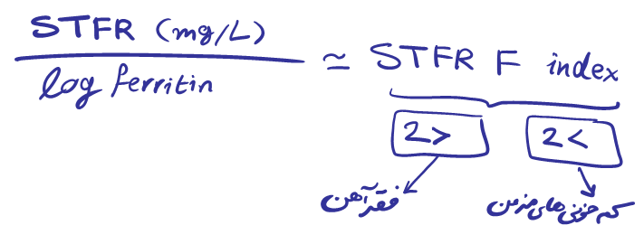
برای مثال، اگر sTfR برابر ۵ میلیگرم در لیتر و ferritin برابر ۱۰۰ باشد، لگاریتم ۱۰۰ برابر ۲ است و شاخص ۲٫۵ میشود. اگر این شاخص بیشتر از ۲ باشد، به نفع فقر آهن است؛ اگر کمتر از ۲ باشد، به نفع آنمی بیماریهای مزمن است.
STFR گیرندهٔ محلول ترانسفرین (soluble transferrin receptor) است. وقتی بدن دچار کمبود آهن میشود، گیرندههای transferrin را روی گلبولهای قرمز هستهدار و سلولهای دیگر افزایش میدهد تا آهن بیشتری دریافت شود. بخشی از این گیرندهها میشکنند و وارد خون میشوند و میتوان آنها را اندازه گرفت. در آنمی فقر آهن، STFR افزایش مییابد و مقدار بیشتر از 5 یا 6 برای آن ذکر شد.
اگر مقدار sTfR بر لگاریتم ferritin تقسیم شود، شاخص به دست میآید؛ مقدار بیشتر از ۲ به نفع آنمی فقر آهن و مقدار کمتر از ۲ به نفع آنمی بیماریهای مزمن است.
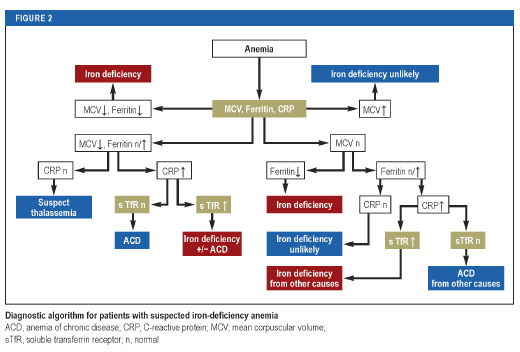
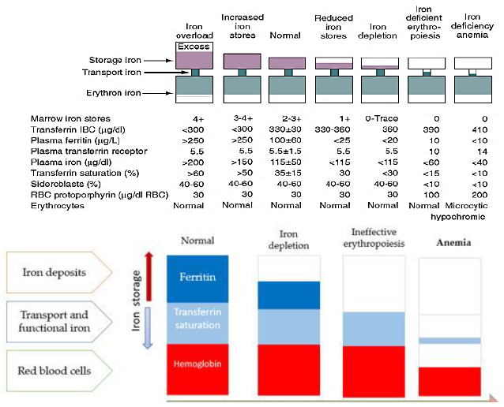
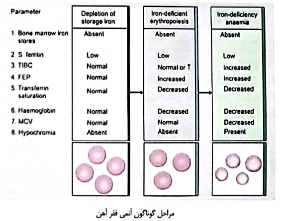
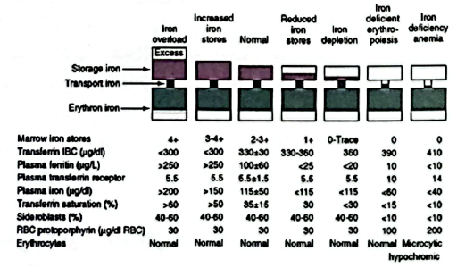
| مقدار sTfR/log ferritin index | تفسیر ذکرشده |
|---|---|
| بیشتر از ۲ | به نفع آنمی فقر آهن |
| کمتر از ۲ | به نفع آنمی بیماریهای مزمن |
مورفولوژی RBC ها در آنمی فقر آهن و شاخص های مورفولوژیک آن
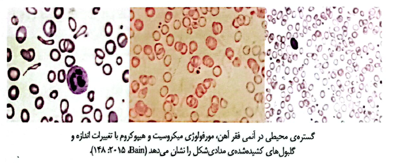
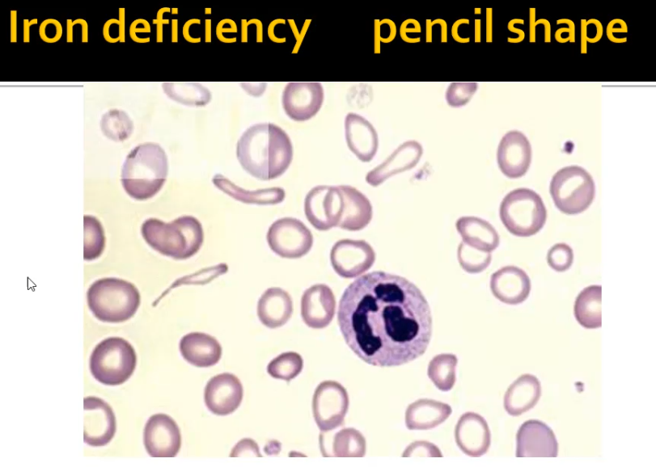
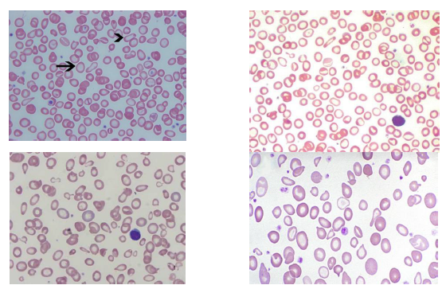
مهم ترین مورفولوژی گلبول های قرمز در آنمی فقر آهن چیست؟ الف) آنیزوسیتوزیس(گلبول ها کوچک و بزرگ) یا افزایش RDW ب) افت شمارش گلبول های قرمز معمولا به کمتر از 5 میلیون ج) مورفولوژی میکروسیتیک هیپوکرومیا یا کاهش MCV و MCH د) دیدن گلبول های مدادی شکل که خالی از آهن میباشند
Clinical Hematology Atlas. Elsevier.
American Society of Hematology (ASH). ASH Image Bank. https://imagebank.hematology.org/
University of Alberta. A Laboratory Guide to Clinical Hematology. https://pressbooks.openeducationalberta.ca/mlsci/
Histology Guide. https://histologyguide.com/
The Blood Project. https://www.thebloodproject.com/
HemoSurf: Hematology Morphology Atlas.
National Center for Biotechnology Information (NCBI). StatPearls. https://www.ncbi.nlm.nih.gov/books/
Shokrgozar N, Golafshan HA. Molecular perspective of iron uptake, related diseases, and treatments. Blood Research. 2019.
Golafshan HA, et al. Evaluation of Red Cell Membrane Cytoskeletal Disorders Using a Flow Cytometric Method in South Iran. Turkish Journal of Haematology. 2014.
گلافشان، حبیبالله و همکاران. اصول و روشهای آزمایشگاهی در بانک خون (ایمونوهماتولوژی). انتشارات دانشگاه علوم پزشکی شیراز.
گلافشان، حبیبالله و حاجیزمانی، سعیده. مهارتهای آزمایشگاهی در خونشناسی: اصول پایه، آنالیزورها، انعقاد و هماتولوژی مولکولی. انتشارات دانشگاه علوم پزشکی شیراز، ۱۳۹۵.
گلافشان، حبیبالله. روشهای آزمایشگاهی و کنترل کیفی در خونشناسی. انتشارات دانشگاه علوم پزشکی شیراز، چاپ سوم، ۱۳۸۲.
| گروه علائم | موارد ذکرشده |
|---|---|
| علائم مشترک در انواع آنمی | تپش قلب (palpitations)، زودرنجی |
| علائم بیشتر مرتبط با فقر آهن | زخم گوشهٔ لب، شکنندگی ناخن، خستگی، رنگپریدگی، سردرد، خشکی و ریزش مو، پرش و بیقراری پاها |
| تمرکز و تحمل سرما | کاهش تمرکز، بهویژه در کودکان؛ تحملنکردن سرما |
| پیکا و pagophagia | تمایل به خوردن مواد غیرخوراکی؛ تمایل به خوردن یخ |
| تغییرات ناخن و زبان | ترک طولی، نازک و شکنندهشدن یا گودشدن ناخن؛ براقشدن زبان و ازبینرفتن پرزها |
| بلع و دهان | بلع دردناک یا دشوار، سوزش زبان، زخم گوشهٔ لب |
| مورد | مقدار یا رابطهٔ ذکرشده |
|---|---|
| آهن در هر سیسی گلبول قرمز فشرده | حدود ۱ میلیگرم |
| برآورد حجم کل خون | وزن × ۷۵ |
| حجم کل خون در مثال فرد ۶۰ کیلوگرمی | حدود ۴۰۰۰ سیسی |
| حجم گلبولهای قرمز و پلاسما در مثال | هرکدام حدود ۲۰۰۰ سیسی |
| آهن همراه گلبولهای قرمز | حدود ۲۰۰۰ تا ۲۵۰۰ میلیگرم |
| آهن ذخیرهشده در مغز استخوان | حدود ۱۰۰ میلیگرم |
| مرحله | مولکول یا مسیر | شرح |
|---|---|---|
| ورود آهن غذایی به سلول گوارشی | DCYTB | آهن غذایی Fe³⁺ را به Fe²⁺ احیا میکند. |
| عبور از سطح سلول گوارشی | DMT1 | Fe²⁺ را وارد سلول گوارشی میکند؛ آهن، منیزیم و روی ممکن است برای این مسیر رقابت کنند. |
| ذخیرهسازی در سلول گوارشی | ferritin | در صورت کافیبودن آهن بدن، آهن به شکل ferritin ذخیره میشود. |
| خروج از سلول گوارشی | ferroportin | در صورت نیاز بدن، آهن از سمت دیگر سلول خارج میشود. |
| اکسیدشدن آهن برای اتصال به transferrin | hephaestin | در کنار ferroportin، Fe²⁺ را به Fe³⁺ تبدیل میکند. |
| انتقال در خون | transferrin | آهن Fe³⁺ را به نقاط مختلف بدن میبرد؛ در کبد ساخته میشود و میتواند دو اتم آهن حمل کند. |
| مورد | شرح |
|---|---|
| گیرندهٔ transferrin | CD71؛ روی سلولهای مختلف، از جمله سلولهای مغز استخوان، وجود دارد. |
| اتصال گیرنده | هر گیرنده میتواند به دو مولکول transferrin متصل شود. |
| ظرفیت هر transferrin | هر مولکول transferrin دو اتم آهن حمل میکند. |
| تمایل گیرنده | تمایل بیشتر به diferric transferrin؛ امکان اتصال به transferrin دارای یک اتم آهن؛ نپذیرفتن transferrin بدون آهن با تمایل |
| وضعیت گلبول قرمز بالغ | هسته ندارد. |
| شرح فرایند در گفتار | یک بخش از گفتار ورود transferrin به سلول و بازگشت transferrin خالی را بیان میکند؛ بخش دیگر میگوید transferrin وارد سلول نمیشود و در خون میماند. |
| جزء یا پروتئین | نقش ذکرشده |
|---|---|
| mitoferrin | انتقال آهن از سیتوپلاسم به میتوکندری |
| میتوکندری | بهکارگیری آهن در چرخهٔ سنتز heme |
| globin | ساختهشدن در ریبوزوم و ترکیبشدن با heme |
| heme + globin | تشکیل هموگلوبین |
| عامل یا وضعیت | رابطهٔ ذکرشده با تنظیم یا تجمع آهن |
|---|---|
| IRP1 و IRP2 | نیاز بدن به آهن بیشتر یا کمتر را حس میکنند. |
| آهن زیاد | سیستم ذخیرهسازی فعال میشود؛ آهن زیاد میتواند به سلول آسیب بزند. |
| آهن کم | نحوهٔ تنظیم و استفاده از آهن تغییر میکند. |
| جذب بیش از حد آهن | میتواند به تجمع آهن در کبد و در نهایت سرطان کبد منجر شود. |
| تجمع آهن در قلب | میتواند ریتم قلب را مختل کند. |
| کبد | از پروتئینهای متعددی برای تنظیم ترشح hepcidin استفاده میکند. |
| عامل | نقش یا ویژگی ذکرشده |
|---|---|
| ferritin | یکی از دو شکل آهن ذخیرهای؛ از ۲۴ زیرواحد سبک و سنگین ساخته شده و میتواند تا حدود ۴۰۰۰ اتم آهن را در خود جای دهد. |
| hemosiderin | شکل دیگر آهن ذخیرهای بدن. |
| NCOA4 | ferritin را به دستگاه لیزوزومی میبرد؛ در آنجا ferritin تجزیه و آهن آزاد میشود. |
| HERC2 | NCOA4 را تجزیه میکند و از ورود مداوم ferritin به مسیر تجزیه و آزادشدن بیش از حد آهن جلوگیری میکند. |
| ferritinophagy | واردکردن ferritin به مسیر لیزوزومی بهوسیلهٔ NCOA4 و آزادشدن آهن. |
| ferroportin | آهن آزادشده از ماکروفاژ میتواند از آن خارج شود و به transferrin متصل شود. |
| محل یا فرایند | رابطهٔ آهن با سلولها و ferroportin |
|---|---|
| ماکروفاژ و گلبول قرمز پیر | گلبول قرمز پیر وارد ماکروفاژ میشود و از بین میرود؛ آهن آن آزاد میشود و از طریق ferroportin از ماکروفاژ خارج میشود. |
| سلولهای روده | ferroportin دارند و آهن میتواند از سلول از طریق آن خارج شود. |
| جزایر اریتروبلاستیک مغز استخوان | سلولهای در حال ساخت گلبول قرمز در اطراف ماکروفاژ قرار میگیرند. |
| دفع هسته | گلبول قرمز هستهدار هستهاش را دفع میکند و ماکروفاژ آن را میخورد. |
| تأمین آهن در مغز استخوان | ماکروفاژ در همان محل ferroportin دارد و میتواند آهن را در اختیار گلبول قرمز هستهدار قرار دهد. |
| وضعیت یا مسیر | اثر بر ferroportin و انتقال آهن |
|---|---|
| بیماریها و عفونتها | کبد hepcidin ترشح میکند. |
| افزایش hepcidin | با بستن ferroportin، خروج آهن از سلول روده و ماکروفاژ کاهش مییابد. |
| جذب آهن از دستگاه گوارش | برای جذب آهن، ferroportin باید باز باشد. |
| انتقال آهن بازیافتی از ماکروفاژ به نسل جدید گلبولهای قرمز | ferroportin ماکروفاژ باید باز باشد. |
| بستهبودن همیشگی کانالها | آهن به بدن نمیرسد و آنمی شدید ایجاد میشود. |
| بازبودن همیشگی کانالها | آهن بیش از حد خطرناک است. |
| پروتئین یا ژن | نقش یا ارتباط ذکرشده |
|---|---|
| HAMP | نام ژن hepcidin که روی کروموزوم ۱۹ قرار دارد. |
| BMP و گیرندهٔ BMP | از پروتئینهای مجموعهٔ کنترلکنندهٔ سنتز hepcidin در کبد. |
| HJV (hemojuvelin) | از پروتئینهای مجموعه؛ hemojuvelin سنتز hepcidin را تحریک میکند. |
| TFR1 | گیرندهٔ transferrin 1؛ از پروتئینهای مجموعه. |
| TFR2 | گیرندهٔ transferrin 2؛ از پروتئینهای مجموعه. |
| HFE | پروتئین hemochromatosis؛ از پروتئینهای مجموعه. |
| matriptase-2 | از پروتئینهای مجموعه؛ hepcidin را میشکند. |
| جهش در این سیستم | تنظیم hepcidin مختل میشود و ممکن است آهن بیش از حد در بدن تجمع پیدا کند. |
| بررسی | چه چیزی را نشان میدهد یا چگونه انجام میشود | نکتهٔ مرتبط با فقر آهن |
|---|---|---|
| مورفولوژی گلبولهای قرمز | در بررسی کمبود آهن کمککننده است. | در کنار آزمایشها بررسی میشود. |
| serum iron (SI) | مقدار آهن متصل به transferrin را اندازهگیری میکند. | در فقر آهن کاهش مییابد. |
| TIBC | ظرفیت کل اتصال به آهن؛ با افزودن آهن برای پرکردن جایگاههای خالی transferrin اندازهگیری میشود. | در فقر آهن افزایش مییابد. |
| transferrin saturation | درصد اشباع TIBC؛ از ضرب serum iron در ۱۰۰ و تقسیم حاصل بر TIBC به دست میآید. | کمتر از ۱۵٪ به نفع فقر آهن است. |
| ferritin | نشاندهندهٔ ذخیرهٔ آهن بدن است. | کمتر از ۱۲ نشاندهندهٔ تهیشدن ذخایر آهن است. |
| Ret-He | مقدار هموگلوبین رتیکولوسیت را نشان میدهد. | کمتر از ۲۷ پیکوگرم نشان میدهد آهن کافی برای ساخت هموگلوبین در دسترس نبوده است. |
| sTfR/log ferritin index | از تقسیم sTfR بر لگاریتم ferritin به دست میآید. | بیشتر از ۲ به نفع فقر آهن و کمتر از ۲ به نفع آنمی بیماریهای مزمن است. |
| شاخص | مقدار یا الگوی ذکرشده |
|---|---|
| serum iron | محدودهٔ طبیعی حدود ۵۰ تا ۱۶۰ میکروگرم در دسیلیتر؛ در فقر آهن کاهش مییابد. |
| TIBC | محدودهٔ حدود ۲۵۰ تا ۴۰۰ میکروگرم در دسیلیتر؛ در فقر آهن افزایش مییابد. |
| transferrin saturation | محدودهٔ طبیعی حدود ۲۰ تا ۴۵ درصد؛ کمتر از ۱۵٪ به نفع فقر آهن است. |
| ferritin | محدودهٔ طبیعی حدود ۲۰ تا ۲۰۰ میکروگرم در لیتر؛ کمتر از ۱۲ نشاندهندهٔ تهیشدن ذخایر آهن است. |
| Ret-He | حدود ۲۷ پیکوگرم به بالا طبیعی؛ کمتر از ۲۷ پیکوگرم نشان میدهد آهن کافی برای ساخت هموگلوبین در دسترس نبوده است. |
| sTfR/log ferritin index | بیشتر از ۲ به نفع آنمی فقر آهن؛ کمتر از ۲ به نفع آنمی بیماریهای مزمن. |
| sTfR | در آنمی فقر آهن افزایش مییابد؛ در گفتار مقدار بیشتر از ۵۶ ذکر شد، اما واحد و صورت دقیق مقدار روشن نیست. |
| روش ارزیابی ذخایر آهن | روش یا ویژگی ذکرشده |
|---|---|
| Ferritin خون | نشاندهندهٔ ذخیرهٔ آهن است؛ در هر ساعتی از روز قابل اندازهگیری است. |
| بررسی آهن مغز استخوان | نمونه رنگآمیزی میشود؛ Perls یا Prussian blue آهن را رنگ میزند. تست طلایی است، اما به نمونهگیری از مغز استخوان نیاز دارد و معمولاً بهسادگی انجام نمیشود. |
| شاخص | سلولی که مقدار هموگلوبین آن سنجیده میشود |
|---|---|
| MCH | گلبول قرمز بالغ |
| Ret-He | رتیکولوسیت؛ گلبول قرمز جوانی که بهتازگی وارد خون شده است |
| مقدار sTfR/log ferritin index | تفسیر ذکرشده |
|---|---|
| بیشتر از ۲ | به نفع آنمی فقر آهن |
| کمتر از ۲ | به نفع آنمی بیماریهای مزمن |
آهن در ورود به سلول گوارشی و خروج از آن چه مسیرهایی را طی میکند؟ نقش DCYTB، DMT1، ferroportin، hephaestin و transferrin را توضیح دهید.
آهن غذایی به شکل Fe³⁺ است و DCYTB آن را به Fe²⁺ احیا میکند. Fe²⁺ از DMT1 وارد سلول گوارشی میشود. اگر آهن بدن کافی باشد، آهن به شکل ferritin ذخیره میشود؛ اگر بدن به آهن نیاز داشته باشد، از ferroportin خارج میشود. Hephaestin در کنار ferroportin، Fe²⁺ را به Fe³⁺ تبدیل میکند تا آهن به transferrin متصل شود.
نقش NCOA4 و HERC2 را در آزادشدن آهن از ferritin شرح دهید و فرایند مربوط را نام ببرید.
NCOA4 به ferritin متصل میشود و آن را به دستگاه لیزوزومی میبرد؛ در لیزوزوم ferritin تجزیه و آهن آزاد میشود. واردکردن ferritin به مسیر لیزوزومی بهوسیلهٔ NCOA4 و آزادشدن آهن، ferritinophagy نام دارد. HERC2، NCOA4 را تجزیه میکند و مانع ورود مداوم ferritin به مسیر تجزیه و آزادشدن بیش از حد آهن میشود.
رابطهٔ hepcidin و ferroportin را در تنظیم خروج آهن از سلول روده و ماکروفاژ توضیح دهید.
Hepcidin با بستن ferroportin، خروج آهن از سلول روده و ماکروفاژ را کاهش میدهد. برای جذب آهن از دستگاه گوارش و رساندن آهن بازیافتی ماکروفاژ به نسل جدید گلبولهای قرمز، ferroportin باید باز باشد؛ اما باز یا بستهماندن همیشگی آن مناسب نیست، چون آهن بیش از حد خطرناک است و بستهماندن همیشگی مانع رسیدن آهن به بدن میشود.
تفاوت serum iron، TIBC و transferrin saturation را از نظر اندازهگیری و الگوی آنها در فقر آهن توضیح دهید.
Serum iron مقدار آهن متصل به transferrin را اندازهگیری میکند و در فقر آهن کاهش مییابد. TIBC ظرفیت کل اتصال به آهن را میسنجد؛ در فقر آهن بهدلیل افزایش transferrin و جایگاههای خالی آن بالا میرود. Transferrin saturation درصد اشباع TIBC است و از ضرب serum iron در ۱۰۰ و تقسیم حاصل بر TIBC به دست میآید؛ مقدار کمتر از ۱۵ درصد به نفع فقر آهن است.
Ret-He و sTfR/log ferritin index چه اطلاعاتی میدهند و آستانههای ذکرشده برای تفسیر آنها چیست؟
Ret-He مقدار هموگلوبین رتیکولوسیت را نشان میدهد؛ مقدار کمتر از ۲۷ پیکوگرم نشان میدهد آهن کافی برای ساخت هموگلوبین در دسترس نبوده است. sTfR/log ferritin index از تقسیم sTfR بر لگاریتم ferritin به دست میآید؛ مقدار بیشتر از ۲ به نفع آنمی فقر آهن و مقدار کمتر از ۲ به نفع آنمی بیماریهای مزمن است.
کدام مسیر، ورود آهن به سلول گوارشی را مطابق مطالب درس نشان میدهد؟
DCYTB آهن Fe³⁺ را به Fe²⁺ احیا میکند و Fe²⁺ از DMT1 وارد سلول گوارشی میشود.
در صورت کافیبودن آهن بدن، سلول گوارشی آهن را به چه شکلی ذخیره میکند؟
وقتی بدن آهن کافی دارد، آهن در سلول گوارشی به شکل ferritin ذخیره میشود.
کدام گزینه نقش hephaestin را درست بیان میکند؟
Hephaestin در کنار ferroportin، Fe²⁺ را به Fe³⁺ تبدیل میکند تا آهن بتواند به transferrin متصل شود.
کدام عبارت دربارهٔ <strong>ferritinophagy</strong> درست است؟
Ferritinophagy فرایند واردکردن ferritin به مسیر لیزوزومی بهوسیلهٔ NCOA4 و آزادشدن آهن است.
افزایش hepcidin چه اثری بر خروج آهن از سلول روده و ماکروفاژ دارد؟
Hepcidin با بستن ferroportin خروج آهن از سلول روده و ماکروفاژ را کاهش میدهد.
کدام الگو در آنمی فقر آهن ذکر شده است؟
در آنمی فقر آهن، SI کاهش و TIBC افزایش مییابد.
serum iron برابر ۳۰ و TIBC برابر ۳۰۰ است. طبق فرمول درس، transferrin saturation چقدر است؟
Transferrin saturation از ضرب serum iron در ۱۰۰ و تقسیم حاصل بر TIBC به دست میآید؛ در این مثال مقدار آن ۱۰٪ است.
کدام مقدار Ret-He نشان میدهد آهن کافی برای ساخت هموگلوبین در دسترس نبوده است؟
در درس گفته شد Ret-He کمتر از ۲۷ پیکوگرم نشان میدهد آهن کافی برای ساخت هموگلوبین در دسترس نبوده است.
کدام گزینه تفاوت Ret-He و MCH را مطابق درس بیان میکند؟
MCH مربوط به گلبول قرمز بالغ است؛ Ret-He مقدار هموگلوبین رتیکولوسیت را نشان میدهد.
sTfR/log ferritin index کمتر از ۲، طبق مطالب درس، به نفع کدام مورد است؟
شاخص کمتر از ۲ به نفع آنمی بیماریهای مزمن است و شاخص بیشتر از ۲ به نفع آنمی فقر آهن.
Keohane EM, Otto CN, Walenga JM. Rodak's Hematology: Clinical Principles and Applications. Elsevier.
Hoffbrand AV, Steensma DP. Hoffbrand's Essential Haematology. Wiley-Blackwell.
Kaushansky K, Lichtman MA, Prchal JT, et al. Williams Hematology. McGraw Hill.
Greer JP, et al. Wintrobe's Clinical Hematology. Wolters Kluwer.
McKenzie SB, Williams JL. Clinical Laboratory Hematology. Pearson.
Bain BJ, Bates I, Laffan MA. Dacie and Lewis Practical Haematology. Elsevier.
Bain BJ. Blood Cells: A Practical Guide. Wiley-Blackwell.
ادیتور: نیما قاسمی (ن.ق.شبزندهدار)
منابع استفادهشده:
برآورد تقریبی تکمیل محتوا: حدود ۹۵٪